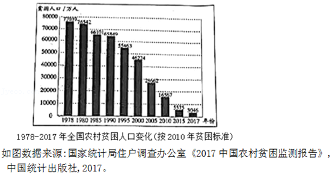

2019年北京市中考语文试题 · 现代文阅读 第6、7、8题
四、现代文阅读（共23分）
6．（7分）阅读下面材料，完成问题。
【材料一】
中国是一个发展中国家，基础差，底子薄，人口多，贫困人口尤其是农村的贫困人口众多。为了促进发展，消除贫困，实现共同富裕，新中国成立以来，在党的领导下，政府始终将扶贫减贫作为国家发展的重要任务。建国之初，国家实行土地改革，建立了社会主义制度，为消除贫困奠定了制度基础。1978年国家全面实施改革开放，经济高速发展，农村贫困人口大幅减少。为进一步提升减贫成效，自1986年起，党进一步加强对扶贫工作的领导，政府成立了专门扶贫机构，开始进行有组织、有计划、大规模的开发式扶贫，并先后制定实施了《国家八七扶贫攻坚计划（1994﹣2000年）》《中国农村扶贫开发纲要（2001﹣2010年）》《中国农村扶贫开发纲要（2011﹣2020年）。2013年，为全面建成小康社会，实现第一个百年奋斗目标，党和政府又提出了精准扶贫战略。

，中国扶贫取得了举世瞩目的成就。在联合国总部举办的中国脱贫成就展开幕式上，联合国常务副秘书长阿明娜明确表示，中国减贫取得了巨大成就，为其他发展中国家实施2030年可持续发展议程提供了重要经验。
【材料二】
全社会广泛参与扶贫工作，加快推进了扶贫开发的进程。例如，我国社会参与最广泛的民间公益事业﹣﹣希望工程，截至2018年已累计接受捐款150.23亿元，资助困难学生594.9万名，援建希望小学20110所。大江南北，长城内外，因贫困失学的儿童犹如久旱禾苗逢甘霖，在朗朗的读书声中扬起了理想的风帆。而发达地区、科研院校、民营企业，通过对口支援、定点帮扶、结对帮扶，实施专项扶贫工程，推动了贫困治理的专业化发展，提升了贫困治理的实际成效。如东部发达地区帮扶西部地区的“东西部扶贫协作”，自1996年至2014年，实施合作项目8万余个。2001年开始，北京大学、清华大学等13所高校对西部13所高校实施“一对一”结对帮扶。2015年开始的“万企帮万村”行动，短短三年，就有5.54万家民营企业对口帮扶了6.28万个贫困村。事实说明，①多方资源、协同多种机制、集全社会之力帮扶贫困地区以及困难群众，已成为中国治理贫困的宝贵经验。
【材料三】
为打赢脱贫攻坚战，近年来，国家实施了精准扶贫战略，针对不同贫困区域环境、不同贫困农户状况，对扶贫对象实施精确识别、精确帮扶、精确管理。以革命老区延安为例，自开展精准扶贫以来，全市建档立卡有劳动能力的4.51万户、13.38万贫困人口依靠苹果种植、棚栽、养殖等致富产业脱贫；建立了43个扶贫就业基地，34个社区工厂，为无法离乡、无业可扶、无力脱贫的贫困劳动力提供就业机会，使11589名贫困人口依靠稳定就业脱贫。这种一对一的精准扶贫，就像在庄稼的根部施肥浇水，效果更为显著。2019年5月7日，陕西省人民政府宣布，延安实现整体脱贫的目标。实践证明②，为老区脱贫走出了一条新路。
（1）根据【材料一】中图1的信息，在【材料一】的横线处补写一句话。
（2）依据上下文，在【材料二】和【材料三】的横线处依次填入的词语，最恰当的一项是 。
A．①整合 | ②延安整体脱贫的地区 |
B．①整合 | ②延安地区的精准扶贫 |
C．①集合 | ②延安整体脱贫的地区 |
D．①集合 | ②延安精准扶贫的地区 |
（3）从上述三则材料可以看出，我国扶贫工作取得巨大成就的主要原因分别是 、 、 。（每空限10个字以内）
7．（9分）阅读《天上梯田听古歌》，完成问题。
天上梯田听古歌
张永权
①南疆春早，当北国还是一片千里冰封时，这里早成了一个孕育生命的季节。红河两岸，哈尼山寨，层层梯田，一片繁忙，正是插秧的好时节。
②天不亮，哈尼妇女就起来煮好红鸡蛋、红米饭和腊肉，背到梯田边，让全家享用。男人们把田里的秧苗拔起来打捆挑到栽插的田间。女人们一排排下到田里栽秧。一梯梯良田，被翠绿的秧苗绣成碧玉般的天梯，一梯一梯地向着蓝天伸去。梯田接地连天，天在水田里，人在彩云中，好一幅美好和谐的田园农耕图。
③这里就是称雄天下、有大山雕塑美誉的世界文化遗产元阳哈尼梯田核心区，三千多级的梯田，从山脚伸进云天，气象万千，雄奇磅礴。梯田在一年四季形成不同的景观，冬天清水滢滢，阳光下的玉梯，波光闪烁；春夏翡翠绿梯，耀眼悦目；秋搭金梯，辉煌灿烂，气势非凡。一千个梯田，就有一千个太阳；一万个梯田，就装着一万片奇幻的云彩。
④哈尼人，只要一说话，就会唱歌，说红河两岸人人都是歌唱家绝非夸张，此时那些栽秧的女人唱起歌来，歌声此起彼伏，四山回应。有的高亢嘹亮，有的低迴优美。外人听不懂歌词，但美好的旋律却也让人陶醉。合唱、独唱、对唱，女人们一边栽秧，一边唱歌，让梯田成了神奇的赛歌台，把希望的秧苗插在歌声里。
⑤人群中有个姑娘，她放声一唱，四周便一片寂静，这时，只有她那山泉般清纯的声音，流淌在秧田之中，流淌在天上人间。陪同的哈尼族诗人朋友告诉我，她唱的是一首哈尼族四季生产调中表现栽秧生活的古歌，诗人译出的歌词大意，也充满诗意：冬天是春天的母亲，冬天老了，春天就长大了。春天飞来白鹇鸟，白鹇鸟把红米的种子撒在梯田上，秧姑娘就出生了。今天长大的秧姑娘要出嫁，红河两岸的木棉花举起玛瑙酒杯来祝贺，秧姑娘要在梯田安个新家……这古歌的歌词想象浪漫奇特又很原生态，这是真正的诗。他还告诉我，这个栽秧女可是见过大世面的。自从2013年6月哈尼梯田申遗成功，进入世界文化遗产名录后，哈尼梯田和哈尼古歌，就闻名世界了。2015年5月她和哈尼古歌艺术团到意大利米兰世博会演出半年之久，惊艳海外。像她这样唱哈尼古歌的农民，生在哈尼山寨，哈尼梯田和他们生生不息，不离不弃，相依为命。正如他们在古歌中唱的：“没有哈尼族的天上梯田，就没有哈尼人的今天。”
⑥昨晚在山上的哈尼小镇看哈尼古歌艺术团的演出后，我们和一位年逾古稀的古歌传承人交流，还听他唱了一段原始的古歌。老人满头银发，脸上刀刻样的皱纹流着人世沧桑。说到要唱古歌，老人就兴奋了，朋友说他身上的每个毛孔都能流出歌来。他唱了一首哈尼族古歌中的“阿培聪坡坡”，即迁徙古歌。这时，山风停止了呼吸，夜虫突然闭嘴不再鸣叫，四周万籁静寂，只有老人深沉而动情的歌声回响在梯田的夜空。
⑦一个善良勤劳的民族，灾难毁了他们北方的家园，哈尼人南迁寻找他们美好的诺玛阿美﹣﹣太阳升起的光明之地。他们翻过重重高山，越过条条大河，从遥远的青藏高原，经过大渡河流域、洱海之滨，再到滇池湖畔，建起了幸福的家园。但美好的地方遭恶人妒忌引来战乱，善良的哈尼人让出新的家园继续南迁。天上的雄鹰引着他们翻过崇山峻岭，越过深谷大河，来到红河之南，这里成了他们的诺玛阿美。在那儿，竹鼠和小猴一起游戏，野鸭野鸡和家鸡家鸭在一起玩耍，大象和野牛在河里喷水洗澡，一年四季都有鲜花开放，森林里的蘑菇很大很鲜美，白鹇鸟从远方衔来了红米种子，山上种出的哈尼红米喷喷香。
⑧山有多高，水就有多高，在山坡开田种庄稼，一代又一代的哈尼人，把开出的梯田接到蓝天上，成为天堂上的良田，才有了真正美好的诺玛阿美。
⑨老人唱古歌动情的形象，定格在我心中，成为一座庄严的雕像，屹立在天上梯田。
⑩古歌中的哈尼梯田，就这样和一个民族的命运连在了一起，史书记载，已有1300多年的历史。在口耳传承的古歌中，它的历史还更加久远深厚。
⑪从某种角度说，是哈尼古歌把哈尼梯田唱进世界文化遗产名录的。古歌源于梯田，人人心中都有一首梯田里的古歌，个个眼里都有一片古歌中的天上良田，代代传唱，世代耕耘，古歌永远，梯田永远。
（1）文章首先描写了一幅美好和谐的农耕图，然后分三个层次依次写了 ， ，
，最后写古歌和梯田永驻哈尼人的心田。（每空限10个字以内）
（2）文中两处画线语句都是对梯田的描写，二者在内容、情感、语言、手法等方面有共同点。请你任选一点，结合这两处语句，作简要分析。
（3）“诺玛阿美”在文中出现了三次。第一次指的是心中理想的家园，第二次和第三次分别指的是什么？
第二次指的是： 。
第三次指的是： 。
8．（7分）阅读下面的文字，完成问题。
①在绵延五千年的历史长河中，中华民族始终不乏英雄的身影。何为英雄？英雄，就是当人民、国家处于危险之时，不惧艰险，挺身而出，解黎民于倒悲，救国家于危难，即使付出生命也在所不惜的杰出之人。
②誓要“精忠报国”的宋朝名将岳飞，为抵御外侮，满怀一腔热血，义无反顾奔赴沙场。“许身国成壮河山”的两弹元勋邓稼先，在一次核试验发生事故时，明知会有遭受核辐射的危险，但为了取回破碎的部件，了解事故的原因，他坚决地说：“我进去吧。”为了民族和国家的利益，用生命担当使命，这正是英雄们所具有的一种高尚的品质。
③面对危险，把生的希望留给他人，这是英雄不同于凡人的又一可贵之处。2018年10月11日，在云南省麻栗坡县的老山雷场扫雷行动中，面对复杂雷场中的不明爆炸物，杜富国对战友说了句“你退后，让我来”。在突遘爆炸时，他本能地一挡，两三米外的战友得救了，他却从此失去了双手和双眼。在危险时刻第一个冲上前去，用自己的牺牲换取他人的平安和幸福，这种舍己为人的气概正是英雄们身上所具有的伟大气质。
④正由于英雄具有这些崇高的品质，其对社会发展所起的作用是不可估量的。对个人而言，英雄为我们树立起精神的标杆，影响着一个人的人生观和价值观的形成。对国家而言，英雄是国家的符号，每个国家都需要有引以为豪的英雄。英雄们身上所具有的光辉品质，正是构筑民族精神最重要的元素之一。可以说，正是千千万万的英雄，才使得我们的国家和民族于危亡中现生机，由积贫积弱走向繁荣昌盛。
⑤因为英雄具有崇高的品质和巨大的价值，所以， 。都达夫在纪念鲁迅大会上说过，一个没有英雄的民族是不幸的，一个有英雄却不知敬重爱惜的民族则是不可救药的。尊崇英雄，是对历史的尊重，是对正义的维护，是对信仰的坚定，是对未来的守望。让我们把学习英雄作为一种时代的追求，让崇尚英雄蔚然成风。
（1）根据你对全文论述内容的理解，结合上下文，在第⑤段横线处补写一句话。
（2）阅读全文，判断下列说法，正确的一项是
【甲】文章开篇提出中心论点：中华民族在五千年历史中始终不乏英雄的身影。
【乙】文章列举岳飞、邓稼先、杜富国的典型事例，来论证英雄所具有的品质。
【丙】第④段从个人、国家两方面，论证了英雄具有构筑民族精神的重要价值。
（3）下面是两位英雄留下的诗句。请你任选其一，结合诗句的内容和上面的文字，简要说明他（她）具有怎样的英雄品质。
①人生自古谁无死，留取丹心照汗青。（文天祥）
②拼将十万头颅血，须把乾坤力挽回!（秋瑾）